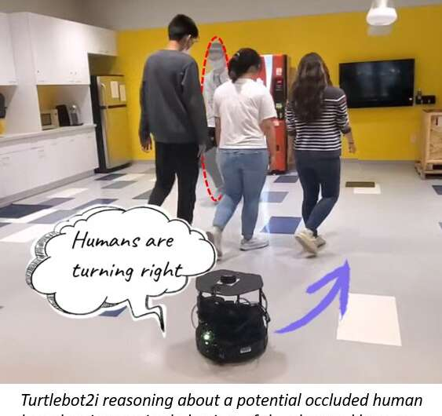

Oracle and NVIDIA have formed a multi-year partnership to help customers solve business challenges with accelerated computing and AI.
The collaboration aims to bring the full NVIDIA accelerated computing stack – from GPUs to systems to software—to Oracle Cloud Infrastructure (OCI).
Study urges caution when comparing neural networks to the brain

Neural networks, a type of computing system loosely modeled on the organization of the human brain, form the basis of many artificial intelligence systems for applications such speech recognition, computer vision, and medical image analysis.
Improving the autonomous navigation of mobile robots in crowded spaces using people as sensors
A team of researchers from University of Illinois at Urbana-Champaign and Stanford University led by Prof. Katie Driggs-Campbell, have recently developed a new deep reinforcement learning-based method that could improve the ability of mobile robots to safely navigate crowded spaces. Their method, introduced in a paper pre-published on arXiv, is based on the idea of using people in the robot's surroundings as indicators of potential obstacles.